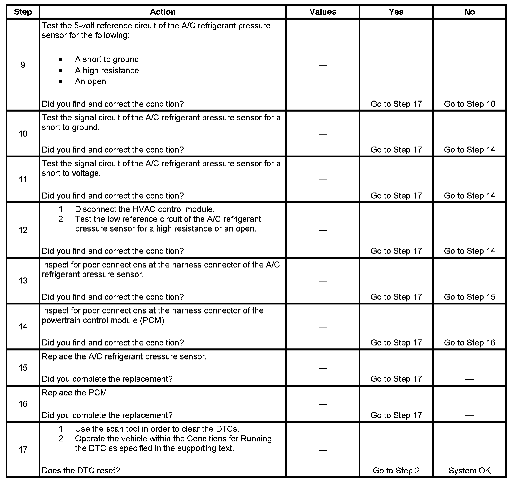

HVAC System - Automatic
DTC P0532 or P0533
CIRCUIT DESCRIPTION
The powertrain control module (PCM) monitors the high side refrigerant pressure through an A/C refrigerant pressure sensor. When the pressure is high, the signal voltage is high. When the pressure is low, the signal voltage is low. When pressure is high, the PCM commands the cooling fans on. When pressure is too high or too low, the PCM will not allow the A/C compressor clutch to engage. The PCM sends the A/C pressure data to the body control module (BCM) over the GM LAN serial data circuit. The BCM will command the inline A/C orifice solenoid to increase or decrease the high side pressure. This keeps the high side pressure in a normal operating range. This will prevent the A/C compressor clutch from disengaging under normal operating conditions. The BCM will not request A/C compressor clutch engagement if the A/C pressure is too high.
DTC DESCRIPTORS
This diagnostic procedure supports the following DTCs:
- DTC P0532 Air Conditioning (A/C) Refrigerant Pressure Sensor Circuit Low Voltage
- DTC P0533 Air Conditioning (A/C) Refrigerant Pressure Sensor Circuit High Voltage
CONDITIONS FOR RUNNING THE DTC
The engine is running.
CONDITIONS FOR SETTING THE DTC
- A/C pressure of less than 0.3 volts or more than 4.92 volts.
- The condition must be present for more than 5 seconds.
ACTION TAKEN WHEN THE DTC SETS
- The PCM will not illuminate the malfunction indicator lamp (MIL).
- The PCM will store the conditions present when the DTC set as Fail Records data only.
CONDITIONS FOR CLEARING THE DTC
- The history DTC will clear after 40 consecutive warm-up cycles have occurred without a malfunction.
- The DTC can be cleared by using the scan tool Clear DTC Information function.
DIAGNOSTIC AIDS
Test the following conditions:
- Visually inspect the sensor for contamination or damage.
- Inspect for the following that may affect the sensors accuracy:
- A malfunction within the refrigerant system causing low pressure
- Visually inspect the A/C components and lines for damage.
- Refer to Testing for Intermittent Conditions and Poor Connections. Component Tests and General Diagnostics
TEST DESCRIPTION
Step 1 - Step 8:
Step 9 - Step 17:

The numbers below refer to the step numbers on the diagnostic table.
4. This step tests for the proper operation of the circuit in the low voltage range.
5. This step tests for the proper operation of the circuit in the high voltage range. If the fuse in the jumper opens when you perform this test, the signal circuit is shorted to ground.
6. This step tests for a short to voltage in the 5-Volt reference circuit.
7. This step tests for a high resistance or an open in the low reference circuit.